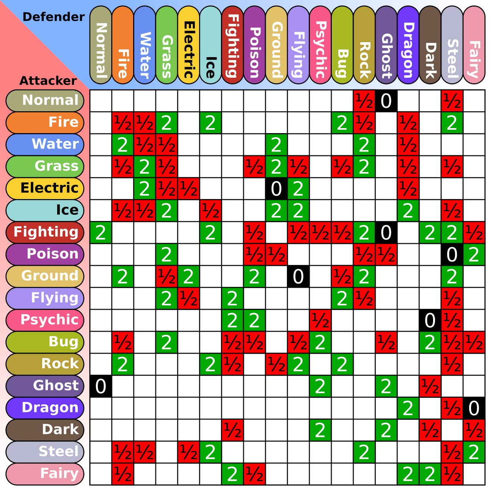

Pokmeon Champions Meta Analysis
I have been playing Pokemon games since as far back as I remember: starting from Pokemon Yellow on the GameBoy, and ending on Pokemon Shield/Sword.
I have even taken part in online tournaments during Generation 8. Since then, life has gotten in the way with my joy of Dynamaxing, Pokemon breeding,
and finding strategies against Trick Room Teams.
When the new Pokemon Champions game released in 2026, being more battle focused, I jumped straight back in with my old competitive-ready Pokemon.
Seeing that it included in-game Battle Data, I conducted an analysis of the Pokemon Meta in this new official VGC format.
I wanted to discover the new meta Pokemon that I have not seen as well as its movesets, in the hopes to build a anti-meta team to climb the ladder.
At the time of writing, Season 3 M-B is underway. More Pokemon has been added and the meta is still evolving. Once in-game battle data is finalised, an update analysis will be provided.
POKEMON INTRODUCTION
To help understand the upcoming analysis, I first need to give a brief overview of Pokemon battling. In essence, each player brings out two Pokemon into battle. For each turn, the player chooses a move the Pokemon will perform, usually a move that will damage the opposing Pokemon. The player that knockouts all your opponent's Pokemon wins the battle. One of the fundamental factors that infleunces the amount of damage a move is Pokemon Typing. Each Pokemon is categorised into a type (Grass, Fire, Water), and some Pokemon can have two. Each type comes with a strength and weakness to other types.

It is more complex and convulated Rock, Paper, Scissors. Water > Fire > Grass. If a move is Super Effective against the Pokemon's type, it does double the damage.
Double damage is highly significant and can make or break a battle. There are of course other factors that go into how much damage each move will do, but for the
purpose of this analysis we will focus on Pokemon and Move Typing.
Another main factor that contributes to a winning team is speed control. Each Pokemon has a speed stat: the higher speed determines the Pokemon that will move first.
When you generally want to have your Pokemon attack first, there are two moves that can affect the speed of your Pokemon: Tailwind and Trick Room. Tailwind doubles the
speed of all your Pokemon for 4 turns, and Trick Room reverses the order, making the slowest Pokemon move first. Although you don't have to include these moves in your team,
the inclusion of them, or a way to play around them, is crucial for basic strategy. Fake Out can also be categorised as speed control as it has priority and is a guarantee flinch.
Weather is another basic strategy that a team builds around. There are four major weather effects: Sun, Rain, Sandstorm, and Snowstorm. Each weather gives boosts
to certain Pokemon and their respective move type. I will not go into much detail, but know that the most common weather teams are Sun and Rain, with Charizard and Pelipper
respectively being the main Pokemon for each team.
Each team consists of six Pokemon. Before the battle, the player gets to see who is on the opponent's team and then chooses four of their Pokemon to go into battle.
DATA COLLECTION
All data was collected from the in-game battle data for each season. This analysis is focused on Double Battles, the official VGC format. Since this game does not have an API to gather this data, each data point was manually inserted into an excel sheet. No data cleaning or wrangling was needed.
POKEMON RANK ANALYSIS
I first wanted to see the trend of the Pokemon ranks and move types for each season. This would help me determine which Pokemon I need to find an answer to. For instance, if water moves are very popular, It might be best to not bring a Fire Pokemon into battle. For my move typing graph, I excluded Status (non-damaging) moves, and the move Fake Out. These two categories would have skewed my results towards Normal type moves. A weighted score was calculated by multiplying the sum of the Move Percentages with the number of Pokemon that used said move.
POKEMON RANKS
The top 5 Pokemon in Season 2 are:
- Basculegion
- Garchomp
- Kingambit
- Sneasler
- Charizard
Some notable increases are Whimsicott and Sylveon, while decreases are in Aerodactyl, Pelipper, Tyranitar and Blastoise.
We can safely imply that during Season 1, players have found a counter to Aerodactyl Tailwind, and thus need Whimsicott's ability, Prankster, instead
to help set it up. Sylveon, an already powerful Fairy-type, rose in popularity to help keep the ever-popular dragon Garchomp in check.
Charizard, a very popular Pokemon amongst fans, remain in one of the meta teams as it is a Flying Type and can set up the Sun.
There are only two Trick Room Pokemon in the top 20: Sinistcha and Farigarif. The rise in Farigarif and fall of Sinistcha tells us that Fake Out,
and other priority moves, are more prevalent and players are trying to prevent them.
It makes sense then that Sableye, who is immune to Fake Out due to its Ghost typing, saw more play in Season 2 to use Rain Dance to help set up Rain.
Although Pelipper is still the favourite.
MOVE TYPES
Most common move types encountered:
- Dark
- Normal
- Rock
- Grass
- Fighting
The increase in Rock moves tell us that a Charizard team is amongst one of the strongest teams. Dark type moves gained the most popularity. This is due
to Blastoise and Sableye making it into the top 20, with Dark Pulse and Foul Play respectively as one of its main moves. Ice and Fairy both saw a decline, while Dragon
improved. This implies that players are countering Dragon types with their own Dragon types.
INDIVIDUAL POKEMON
Let's dive deeper into each individual Pokemon. Their tpying, as well as their moves, can tell us which type our own Pokemon should be, or which move types we should bring.
BASCULEGION
Basculegion's popularity lies within one single move: Last Respects. It's base damage increases the more Pokemon you have knocked out, multiplied by it's STAB (Same Type Attacking Bonus), gives you a very strong finisher. With the majority of players running it with the ability Adaptability, paired with a Choice Scarf, this speedy fish is a force to be reckoned with. The only counter I can think of is to outspeed it, or to bring in a Pokemon that is immune to Ghost type.
GARCHOMP
Running amok in Ranked Battles, Garchomp is seen in the majority of teams with good reason. It's STAB attack, Earthquake, is regarded as one of the strongest and most reliable moves in the game. Paired with a Flyting type, it can deal massive damage to your opponent when you take none. Rock Slide is also in it's movepool, which can get rid of your opponent's Charizard. If I wanted to build a team to disrupt the meta, Garchomp would be the first Pokemon I have to find an answer to. Another Flying type can be useful, but does not deal much damage. Ice, Fairy and your own Dragon types seem to be the answer.
KINGAMBIT
Kingambit is a strong Pokemon due to it's ability to play against Trick Room teams, and it's move Sucker Punch that allows it to move first despite it's low speed. A good Fighting type is a good counter to Kingambit due to it's innate resistance to Dark moves. It is no wonder most player's run Kingambit with Chople Berry to nullify its Fighting weakness.
SNEASLER
Speaking of a good Fighting Type, Sneasler fits the slot very well. With a good movepool that includes Fake Out and Dire Claws, Sneasler can counter Kingambit as well as dish out big damage by itself. With the combination of its ability Unburden, and Close Combat proccing White Herb, Sneasler can also outspeed practically all Pokemon in the game. An unchecked Sneasler is a downfall to your team. Along with Garchomp, my team will need an answer to Sneasler if I want to climb up ranks.
CHARIZARD
The most popular pairing with Garchomp, Charizard is also a heavy hitter that can do multiple things. Its Mega form can set up the sun, and a spread move like Heat Wave, you will be looking at two spread moves that can knock out both your Pokemon on turn 1. A Rock move is able to easily take out Charizard, but a defensive move like Wide Guard can also prevent both Garchomp's Earthquake and Charizard's Heatwave.
INCINEROAR
Regarded as one of the best Pokemon in competitive battles, Incineroar is a staple amongst teams. Its ability Intimidate is able to keep physical attackers at bay, and with access to Fake Out and Parting Shot, Incineroar is best used switching in and out of battle, forcing you to switch out your own Pokemon or be knocked out because your team is doing minimal damage to your opponent. To mitigate Incineroar's effectiveness, a Pokemon immune to flinching, or a Special Attacker is a must.
SINISTCHA
Sinistcha is not so much a Pokemon that needs to be countered, more so a must have Pokemon in your team. It can help your Pokemon's survivability with it's ability Hospitality, and its access to Trick Room negates Trick Room teams. Its Ghost typing also helps being Faked Out, with Rage Powder able to redirect moves from your primary damage dealers. Combined with its bulk and its healing move Matcha Gotcha, Sinistcha can stay on the battlefield longer than you think. A good spread move user should be able to overcome Sinistcha's strengths.
WHIMSICOTT
Most players will say that Whimsicott is the best support Pokemon in the game. The ability Prankster enables it to move first which helps set up Tailwind, and its speed allows it to move before other Prankster users. Trick Room would be useless, as Whimsicott also tend to run Encore. Being a Fairy type, it is also able to deal a decent amount of damage to Garchomp. The only answer is to have your own Tailwind Pokemon.
FARIGIRAF
Farigirf is popular due to its ability Armor Tail, which stops Fake Out, an advantage that should not be taken lightly. The most common Trick Room setter, and its ability to take out Sneasler in one hit make it a very strong pokemon against this meta. The only downside is that its not able to do much damage.
ARCHALUDON
The core Pokemon in Rain Teams. Archaludon's Electro Shot can dish out a lot of damage that also increases the more time you use it. Its ability Stamina can make it progressively harder to knock out the longer it stays on the field. With players running it with Leftovers, Archaludon's bulk is not to be scoffed at. With the prevalence of Rain Teams in this meta, Archaludon is another Pokemon that needs to be taken account when building my team. A quick Fighting or Ground heavy hitter is the answer.
CONCLUSION
To counter the meta in Season 2, there are four major Pokemon that you will need an answer to:
Garchomp: An Ice, Fairy, or Dragon type would take it down quickly.
Sneasler: A Fake Out immune Pokemon, and a Psychic type to take it out.
Charizard: A Pokemon that has a Rock move in its movepool
Archaludon: A high-damaging Fighting or Ground move.
A Tailwind setter also seems necessary to counter all the Whimsicotts. Although the top 5 Pokemon are Physical Attackers, there are more Special Attackers, 12, than
Physical Attackers, 9, based on the Adamant and Modest nature counts. Jolly is not seen as much, probably because it is redundant under the Tailwind boost.
Focus Sash, Sitrus Berry, and Leftovers are highly contended items. With the addition of more items in the future, I believe the item list will be more diverse. Besides
Mega Stones, these two items are the most versaitile and useful.